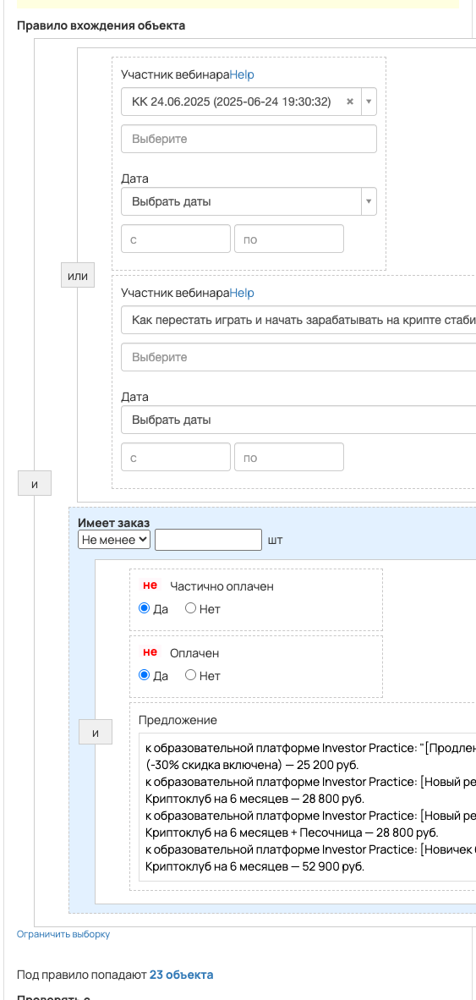

Бонусы за подачу заявки на оплату криптовалютного клуба во время вебинара
- ID процесса:
2144647 - Объект: Пользователи
- Статус: Ожидание событий
Описание из GetCourse
30.06.2026. Подробный ход процесса GetCourse:
Главное: В процесс попадают пользователи по правилу: Участник вебинара или Участник вебинара и Имеет заказ.
Процесс работает с объектом GetCourse: Пользователи. Текущий статус процесса: Ожидание событий.
Как идет процесс внутри GetCourse:
- Схема состоит из 3 блоков и 2 переходов.
Куда передается: Вызовы Vakas в схеме процесса не найдены.
Конец подробного хода процесса GetCourse.
30.06.2026. Актуальное описание процесса:
Главное: В процесс попадают пользователи по правилу: Участник вебинара или Участник вебинара и Имеет заказ.
Процесс работает с объектом GetCourse: Пользователи. Текущий статус процесса: Ожидание событий.
Куда передается: Вызовы Vakas в схеме процесса не найдены.
Конец актуального описания процесса.
Понятное описание процесса
- Процесс работает с объектом GetCourse: Пользователи. Текущий статус процесса: Ожидание событий.
- На вход попадают данные так: В процесс попадают пользователи по правилу: Участник вебинара или Участник вебинара и Имеет заказ.
- Дополнительные условия внутри схемы не извлечены: процесс идет напрямую по основной ветке или условия не подписаны.
- В разобранной схеме не найден прямой вызов Vakas. Если процесс должен передавать в amoCRM, его нужно проверить вручную.
Ход процесса в GetCourse
- Схема состоит из 3 блоков и 2 переходов.
- По типам: стартов 1, условий/ожиданий 0, вызовов URL 0, изменений полей 0, финалов 1.
Блоки процесса: что делают и зачем нужны:
- Блок
37174862«Начало работы» (старт). Что делает: Запускает выполнение схемы для объекта, который попал под правило входа процесса. Зачем нужен: Нужен как точка входа: от него GetCourse начинает движение объекта по схеме. Дальше: если результат «Выполнено», идет в «Добавить в группу». - Блок
37174863«Добавить в группу» (операция user_addtogroup). Что делает: Выполняет служебный шаг схемы «Добавить в группу». Зачем нужен: Нужен как промежуточный технический шаг в схеме «Добавить в группу». Дальше: если результат «Выполнено», идет в «Завершение процесса». - Блок
37174864«Завершение процесса» (завершение). Что делает: Завершает ветку процесса после выполненных проверок и действий. Зачем нужен: Нужен, чтобы закрыть текущую ветку и не гонять объект по процессу повторно. Дальше переходов нет: это конечная точка ветки.
Скриншоты процесса

Откуда: процесс берет пользователи по правилу входа, детали лучше смотреть на скриншоте ниже.
Что проверяет по пути: на схеме нет явных условий или они не подписаны.
Куда ведет: добавляет в группы: Добавить в группу.
Логика Vakas и amoCRM
Этот процесс не содержит прямых вызовов vakas-tools.ru/base/... в разобранной схеме, поэтому отдельная Vakas-логика для него не построена.